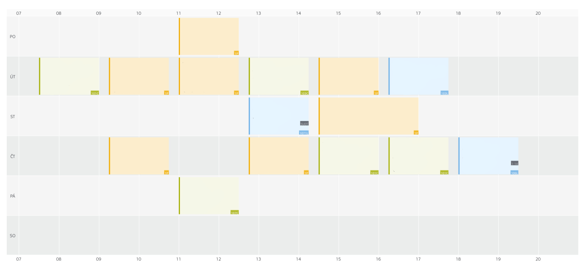

When contacting me please use primarily email or texts. I rarely reply to phone calls. Nevertheless, please see my timetable and call me in my free time.
If you are contacting me from outside email, please check OpenPGP signature, otherwise there is no guarantee I am mailing you.
OpenPGP fingerptint for CTU mail: 67FE 3004 CC80 88E4 61BA E3FC B2EB E6D1 839B 641C
OpenPGP fingerptint for private mail: 8D3D 9E03 1B75 E385 4A96 AC79 867E 8A2B 0F6A 3443
My timetable:

I am also mostly busy on Saturday, but the timetable changes every time. Also there is a big possibility it might change during semestr, so please check every time I am not replying for too long.